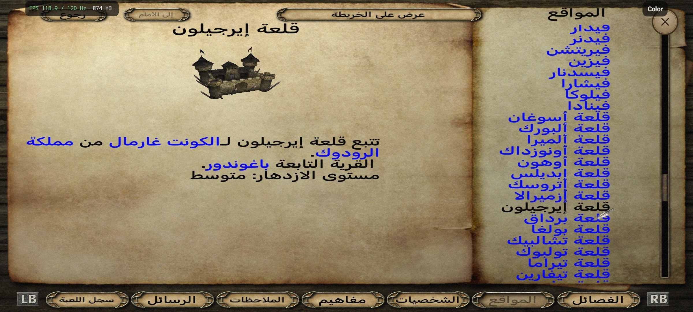

功能總覽
Android 相容性
支援 Android 7.0 至 Android 17 及更新版本，在 Android 10 及更新版本上提供強化的多執行緒。HDR 與無瀏海全螢幕模式帶來最具沉浸感的體驗。核心綁定有助於提升效能，高更新率螢幕支援讓畫面保持流暢。提供 ARMv7 與 ARMv8 版本，完整相容 Adreno、PowerVR 與 Mali GPU。
語言支援
在地化檔案從與 PC 相同的路徑載入。形態變化、格變化與時態變化等高階語言功能重新可用，在地化語音也已還原。繁體中文已支援，包含字型。原作從未附帶過的語言可獲得結合語境的高品質 AI 翻譯，以及用於翻譯成新語言的內建工具組。診斷工具會檢查語言檔案中的問題。
安裝
在地化可從啟動器的線上庫安裝，或將檔案直接放入對應資料夾。
資料夾路徑
在地化檔案從下列資料夾讀取，其中 {code} 是語言代碼，例如 en 或 ar：
patch/languages/{code}/用於遊戲文字patch/Modules/{module}/languages/{code}/用於模組文字patch/Data/languages/{code}/font_data.xml用於字型的字符圖表main/Textures/languages/{code}/font.dds用於字型的紋理圖集patch/Modules/{module}/Sounds/languages/{code}/用於音訊main/Sounds/languages/{code}/用於音訊


控制自訂
可使用螢幕觸控、手把或鍵盤滑鼠來操作遊戲，並從啟動器進行設定。為觸控操作選擇主題，調整靈敏度與反轉，並選擇方向按鈕要回應滑動還是點按。新增自訂按鍵並選擇其圖示。觸控操作會依目前畫面按需顯示，並隨遊戲切換畫面而變化，讓控制與你正在進行的操作相符。
遊戲模組
模組目錄路由重新可用，讓你能遊玩社群製作的自訂模組，資源也能正確載入並提供備援。著色器相容性與透明度問題已修正，材質差異與動畫問題也一併解決。控制偵測會建議將按鈕對應到模組預期的按鍵。可為特定模組以及模組隨附的引擎模組自訂顏色與圖示。


相容的第三方模組
- Gekokujo
- Persistent World
- 1860s Old America
- 1257AD - Enhanced Edition (partially)
- A World of Ice and Fire (partially)
- The Last Days of the Third Age (partially)
- Perisno (partially)
- Rome at War
模組安裝
每個模組位於各自的資料夾中， patch/Modules/{module}/. 模組開發資訊：
模組開發
觸控介面自訂
touch.csv 用於改變觸控按鈕的外觀與初始位置。它是純文字檔案，每行一個設定。以下是一個小範例：
attack.color|red
defend.x|80
*.color|#FFD700逐行說明：
attack.color|red讓攻擊按鈕變成紅色。defend.x|80移動防禦按鈕，使其中心位於螢幕從左起 80% 的位置。*.color|#FFD700讓其餘所有按鈕變成金色。攻擊按鈕保持紅色，因為它自己的行會覆蓋*.
將檔案儲存為 touch.csv ，放在模組的語言資料夾中：
patch/Modules/{module}/languages/en/touch.csv適用於所有語言。把大部分設定放在這裡。patch/Modules/{module}/languages/{code}/touch.csv僅在遊戲使用該語言時生效，例如帶有字母的不同圖示。
遊戲語言檔案中的鍵會覆蓋英文檔案中的相同鍵。
每行分為兩部分，在第一個 | 字元（直線）處分開：
- 直線左側：按鈕名稱、一個點，以及設定名稱。
defend.x表示「防禦按鈕的 x 位置」。 - 直線右側：值，例如
80,red或#FFD700. - 每行一個設定，儲存為 UTF-8 文字。
|的行會被略過。 - 如果同一設定在一個檔案中出現兩次，後面的行生效。
*代替按鈕名稱表示所有按鈕。它僅適用於color與background，不適用於位置、大小、圖示或 shown。
按鈕名稱
- 戰鬥：
attack,defend,kick,jump,use,zoom,switch_weapon,next_shield,crouch,weapon_mode,drop,camera,leave,menu,chat,orders,orders_more - 命令：
orders_up,orders_choose,orders_down,orders_back - 地圖：
map_look,fast_travel,map_camera,stop_rest,map_menu - 交易：
trade_take_all,trade_give_all,trade_cancel - 隊伍：
party_stack,party_ten - 其他：
screen_back,dialog_up,dialog_select,dialog_down - 可指派：
extra1至extra10 - 模組：
mod.{mod id}.{button id}
移動搖桿不是 touch.csv 按鈕。它的大小與位置由玩家選擇，因此 touch.csv 無法變更。
設定項：
attack.icon|M4 20 L20 4 M14 4 H20 V10將圖示設定為 24×24 格線上的 SVG 路徑指令（M、L、H、V、C、S、Q、Z）。若只想變更按鈕的某個版本，請加入其動作：kick.game.kick.icon是徒步踢擊，kick.game.action.icon是騎馬時的踢擊。*.color|#FFD700設定圖示或標籤的顏色。可寫#RRGGBB,#AARRGGBB，或顏色名稱，例如red.defend.background|#C0301010設定按鈕未按下時其背後的圓盤。defend.x|80與defend.y|89設定按鈕的中心，以螢幕寬度與高度的百分比表示，範圍從 0 到 100。defend.size|14設定直徑，以螢幕較短邊的百分比表示，範圍從 6 到 40。kick.shown|false設定按鈕是否預設顯示在螢幕上。可寫true或false.
超出範圍的值會被限制在範圍內，錯誤的顏色或鍵會被忽略。位置只是預設值：玩家移動、調整大小或隱藏過的按鈕會保留玩家的設定。在編輯器中重設可還原模組的數值。
引擎模組的路徑與封裝
模組可以在下列位置隨附引擎模組 patch/Modules/{module}/mods/. 每一項可以是：
- 一個
.zip封裝，檔案位於根目錄或單一資料夾中 - 包含封裝檔案的資料夾：
manifest.json,mod.armv7.o和/或mod.arm64.o, 以及選用的mod.jar
玩家選擇該模組時，會被詢問一次是否執行它們。它們僅在該模組下以預設設定執行。
多人遊戲與引擎升級
在與 1.158 與 1.174 版本相容的多人伺服器上遊玩，包括透過區域網路。瀏覽並加入自訂伺服器，啟動器會自動切換到所選伺服器所需的模組。
PC 引擎功能與腳本操作碼已更新至 Warband 1.173。支援角色匯入與匯出。多人遊戲可與 Warband 1.174 搭配運作。
玩法新增內容
Live Sky 著色器讓雲層動起來，並為夜空加入動態效果。Live Trees 著色器讓樹木與其他植被搖曳。Fire Damage 與 Water Physics & Drowning 可從線上庫取得：火焰能傷害角色，水體則加入涉水、下沉與溺水。Hit Vibration 可在你受到或造成傷害時讓手機震動，攻擊越強震動越強。所有這些功能都可以在啟動器中啟用或停用。
更快的載入速度與遊戲效能
透過同時讀取檔案，並以小批次載入模組資料與紋理，遊戲啟動更快。它也會在多個執行緒上編譯著色器並快取，使下次載入更快。紋理串流會讓紋理在顯示到螢幕前保持較小，不再需要時又將其縮小。這樣可以節省記憶體。
ARM64 版遊戲經過全新的重新翻譯與最佳化，緩慢的引擎部分也已重寫。因此，ARM64 版本現在的效能超越了原本的 ARMv7 版本。重寫的部分包括動畫、可見性、碰撞、地形、瞄準與繪製，減少了這些工作所需的負擔。遊戲與圖形還可以使用裝置最快的 CPU 核心，而背景工作使用其他核心。加快時間流逝時，世界地圖也能保持更流暢。
紋理格式
已支援 DXT BC1–3 紋理格式的裝置會直接使用原生紋理。不支援 DXT 的裝置有兩種選擇：一次性轉換紋理並快速載入，或在每次載入時轉碼。從零撰寫的 retexcon 庫模組可處理 ASTC、ETC1、ETC2 與 RGB8 格式，包括透明度。它達到 99.8% 的準確率，執行速度比 ARM 的開放原始碼庫快上許多倍。對於低階裝置，可以設定區塊大小與紋理解析度，但字型與天空盒等重要紋理會例外。64 位元版本將紋理載入到獨立的記憶體區域，從而支援更大的紋理，並為遊戲的其他資源留出更多空間。完整支援 HDR 天空盒紋理。還原了對 TexturesHD 的支援，部分紋理也從 DXT 壓縮偽影中修復。我們的紋理引擎還支援隨需紋理串流，將所需記憶體減半。
後處理與 HDR
PostFX Restore 還原了行動版缺失的後處理管線：其算繪通道、著色器技術，以及曝光、泛光、模糊等效應。當裝置支援時，它會使用更高精度的浮點算繪目標。遊戲的伽馬設定也能正常運作。
對於支援的裝置與螢幕，HDR 輸出使用 HDR10 或 HLG，將亮度與色域擴展到標準輸出之外。進階逐像素色調對應讓明亮區域達到 HDR 高光，同時保留影像其餘部分。自動模式優先選擇 HLG，其次為 HDR10。HDR 輸出需要裝置、顯示卡驅動程式與顯示器的支援；否則遊戲使用標準 SDR 輸出。
減少閃爍
遊戲可以使用 24 位元深度緩衝區，取代原本的 16 位元。這有助於避免遠處表面閃爍。Scene depth 設定提供 24 位元（D24S8），在支援的裝置上還提供 32 位元浮點（D32F）。
Framebuffer Format 控制螢幕能顯示多少色彩細節。它提供裝置支援的格式：RGB888（24 位元）、RGB10A2（30 位元）與 RGBA16F（64 位元浮點）。更高的色彩細節有助於減少漸層中可見的色帶。GPU 抖動也可以關閉；它可能在 16 位元色彩上造成固定的點狀圖案。
自製 TAA 模組加入時間抗鋸齒，這是原版遊戲所沒有的。與 NVIDIA DLSS 等現代圖形功能一樣，它利用鄰近影格的資訊來平滑鋸齒邊緣並減少閃爍。
移動時，樹木的細節層級會平滑過渡，包括放置在世界中的樹木。這避免了樹木切換細節層級時出現的突變、閃爍、移動線條與樹幹重疊。樹葉在淡出時保持形狀，沒有暗邊。草與小型植物會逐漸淡入，而不是一下子出現。
改進的陰影
在非 Tegra 圖形晶片上還原了環境陰影，邊緣更平滑，而不是方塊狀。修正有助於防止圖形資源重設後或陰影貼圖失敗時陰影消失。附近角色的陰影更新更頻繁，也更準確。角色與樹木的陰影不再突然出現，過渡平滑。選用的深度紋理模式帶來柔邊環境陰影，以及更貼合、更清晰的細節。
場景轉場
場景切換時可以淡出再淡入，以隱藏黑屏閃爍與上一場景的殘留部分。繪製新場景時，上一張影像會保持可見。淡入淡出可以關閉。
TTS 與 STT
文字轉語音可以朗讀對話和你選擇的對話選項。語音在支援的語言中可用。你還可以啟用朗讀通知、場景訊息與多人聊天。
語音轉文字讓你透過手機的語音辨識來口述聊天。在戰鬥中，使用麥克風按鈕或對應按鍵說出命令：指揮指定隊伍或所有人，或執行你的某個自訂命令。語音功能可在啟動器的模組設定中設定。
偵錯疊加層
在疊加層中顯示 FPS、記憶體使用量、ping、裝置溫度與熱節流狀態。調整伽馬、飽和度與對比度，以調校遊戲的影像。
介面自訂
調整訊息大小，將介面設為 4:3 或 16:9，並控制觸控按鈕是否留在遊戲畫面內。你可以讓戰鬥與世界地圖保持全螢幕，隱藏彈出視窗，並隱藏螢幕上的錯誤訊息。
啟動器包含遊戲 rgl_config.txt 設定的編輯器。搜尋設定，用滑桿、開關與選單編輯，或使用原始文字檢視。將數值與遊戲預設值比較，並在需要時重設設定。變更會在遊戲下次讀取檔案時生效。
存檔管理
從啟動器管理存檔：匯入與匯出存檔檔案，建立與還原備份，以及編輯存檔資料。